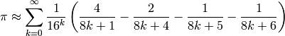

The second part of this article Python, π and functional programming, shows a few techniques available to the Python programmer to accelerate a code. The previous implementation is adapted to use efficiently the many processors and cores available on a host. Then the critical path that crunches numbers are rewritten in C, because this language is very good at this. Finally, a better mathematical method is used which is faster by several orders of magnitude.
It is interesting to note that all the previous scripts run on only one core even if the host features many processors and cores. Python makes it easy with the multiprocessing module to run functions into their own separate system process which are dispatched by the kernel on the available processors and cores.
In the following version of the script, four processes will be run, each handling a fourth of the requested iterations. Each process is created by providing a function to be run and a list of arguments.
The multiprocessing make the Queue available which is reachable by each processes and safe for concurrent read and write access.
An anonymous function which computes pi and writes the approximation to such a Queue instance is given as the function to be run by each processes. In this implementation, the π approximation is the mean of the approximations found in the queue.
def pi(n):
somme=0
for i in xrange(n):
if sqrt( uniform(-1,1)**2 + uniform(-1,1)**2 ) < 1:
somme+=1
return 4*float(somme)/n
n = int( sys.argv[1] )
from multiprocessing import Process, Queue
processes, q, numproc = (), Queue(), 4
for _ in range(numproc):
processes.append(Process(target = lambda n:q.put(pi(n)),
args = (n/numproc,)))
for p in processes: p.start()
for p in processes: p.join()
subprocess_results = [ q.get() for _ in range(q.qsize())]
print "with 4 processes, Pi = %s" %(
sum(subprocess_results)/len(subprocess_results))
Let’s time this version:
~$ test_it ./procedural_with_processes.py
For 200000 points, with 4 processes, Pi = 3.13968
duration: 0.27 seconds
For 1000000 points, with 4 processes, Pi = 3.141212
duration: 1.08 seconds
For 5000000 points, with 4 processes, Pi = 3.1419328
duration: 5.12 seconds
The durations are exactly halved when compared to procedural.py, the two cores of the Intel Core 2 Duo, on which this article is edited, were effectively used.
Python code is transformed, by the Python interpreter, on execution into byte compiled code, which is composed of commands interpreted by the Python virtual machine. The Python virtual machine is a compiled software written in C which directly talks to the processor. For some demanding computing uses, such as this approximation of π, this two step process: interpretation first, and execution second, is suboptimal this is why it is desirable to write extensions directly in C.
Retrieving of the command line argument, printing the result and splitting the work into processes are only done once in the lifetime of the script so their impact on performance are negligible, it is very practical to write it in Python. In our example, the hard work in this script is the pi function, which could not be simpler in terms of signature: it requires an int, returns a float, raises no errors, and makes no side effects (apart from CPU usage). We can write the pi function in C so that, when compiled, it is directly understood by the processor, sidestepping the Python virtual machine.
The distutils module has one powerful way to create extensions in C for Python and is nicely integrated into the standard Python distribution. For the record, ctypes is a way to reuse installed shared librairies (also in the standard library). Swig is another way to mix C with many other languages. Another strategy is to build a compiler directly in the interpreter: this is called a just in time compiler and Pypy offers such an approach, among other features.
Using distutils, two more files are needed a C file (let’s call it pimodule.c) and a configuration file. Here are the steps involved:
Write standard a C function called pi:
float pi(int n){
double i,x,y,sum=0;
srand(rdtsc());
for(i=0;i<n;i++){
x=rand();
y=rand();
if (x*x+y*y<(double)RAND_MAX*RAND_MAX)
sum++; }
return 4*(float)sum/(float)n; }
The rdtsc function initializes the random generator with a random seed.
int rdtsc(){
__asm__ __volatile__("rdtsc");}
Write the conventional boilerplate 2 functions and one struct in the C file that distutils expect. More details can be found here.
A wrapper function for the pi function, which matches Python interfaces, is defined. This wrapper receives the arguments in the form of Python objects that it transforms to input argument for the C function in the correct format: here, a simple int. The wrapper also builds an Python float object from the C float approximation of Pi returned by the pi C function:
static PyObject *
pi_pi(PyObject *self, PyObject *args)
{
const int n;
if (!PyArg_ParseTuple(args, "i", &n))
return NULL;
return Py_BuildValue("f", pi(n));
}
The non standard type such as PyObject are available through the inclusion of the <python2.6/Python.h> headers.
The methods exported to Python are declared in an array of PyMethodDef:
static PyMethodDef PiMethods[] = {
{"pi", pi_pi, METH_VARARGS, "Simple Pi Approximation"},
{NULL, NULL, 0, NULL} /* Sentinel */
};
For each method described in the array, the first element is the method name in Python, the second element is the pointer to the C function, the third argument specifies if the Python method should accept variable arguments and keyword arguments. Here no keywords arguments are possible, only variable arguments. The last element is the docstring for the method.
An initialization function is written for the package. This function will be executed when the module is imported in the Python interpreter:
PyMODINIT_FUNC
initpi(void)
{
(void) Py_InitModule("pi", PiMethods);
}
That’s it for pimodule.c. It is ready for compilation.
Most Python code aimed to be distributed include a setup.py file which specifies the packaging options. This file uses the setup() function and would minimally be:
from distutils.core import setup
setup( name = 'pi', version = '0.1',
description = 'This is simple method for approximating Pi')
The Extension class from the distutils package has some magic taking care of the build configuration of the module. It is one more line in the setup.py:
from distutils.core import setup, Extension
setup( name = 'pi', version = '0.1',
description = 'This is simple method for approximating Pi',
ext_modules = Extension('pi', sources = ['pimodule.c']))
Building and installing the module is now straightforward:
~$ python setup.py build # Compilation
~$ sudo python setup.py install # Installation in the Python path
~$ python
>>> import pi # The module is available
>>> help(pi) # to the interpreter
[ ... ]
pi(...)
Simple Pi Approximation
>>> pi.pi(1000)
3.2040000
The script from the previous multiprocess section only needs to be slightly modified: instead of defining the pi function, it now needs to be be imported from the pi module. This multiprocess C version shows the following performance:
~$ test_it ./procedural_in_c.py
An approximation of Pi with 4 processes: 3.14168
duration: 0.09 seconds
An approximation of Pi with 4 processes: 3.143028
duration: 0.07 seconds
An approximation of Pi with 4 processes: 3.1415872
duration: 0.18 seconds
The computation is accelerated by a 30 fold factor over the previous version is pure Python. This is not fantastic but it is indeed much more efficient. When compared to Python, C does shine in the processing of numbers. Running the same original procedural pure Python script with the Pypy interpreter instead of the standard Python interpreter shows a five fold speed up, for free.
If the problem really was computing π, its Wikipedia page has several better methods. Here is a seriously fast approximation known as the Bailey-Borwein-Plouffe formula :

This translates into the bbp function, below, in Python, which is correct for the first 13 digits in only ten iterations while previous methods needed millions of iterations for the same results.
>>> bbp = lambda n: sum( 1./(16**k)*(4./(8*k+1)-2./(8*k+4)-1./(8*k+5)-1./(8*k+6))
... for k in xrange(n) )
>>> print bbp(2)
3.14142246642
>>> print bbp(10)
3.14159265359
>>> import math
>>> bbp(10) - math.pi < 10**(-14)
True
Timer is a class which takes a callable as the argument. The method timeit will return the duration in seconds for one million executions of the callable.
>>> from timeit import Timer
>>> Timer(lambda:bbp(10)).timeit()<20
True
Obtaining the 13 correct digits of π can be done in less than 20 microseconds in pure Python with a good algorithm. If 13 digits is not considered enough, Python offers the decimal module. The prec attribute of the context object returned by the getcontext() method of the decimal package is the number of decimal required.
>>> from decimal import Decimal as d, getcontext
>>> def bbp(n):
... return sum( 1/d(16**k) \
... * (4/d(8*k+1)-2/d(8*k+4)-1/d(8*k+5)-1/d(8*k+6)) \
... for k in xrange(n))
...
>>> print bbp(50)
3.141592653589793238462643381
>>>
>>> getcontext().prec = 70
>>> print bbp(50)
3.141592653589793238462643383279502884197169399375105820974944592246655
And now, on to something really fantastic: Late 2009, about 2700 billion decimal digits of Pi were computed in 116 days, using a single desktop computer. This is presently the World Record for the computation of Pi. Kudos goes to Fabrice Bellard. He combined fast math methods, with hardware optimization.